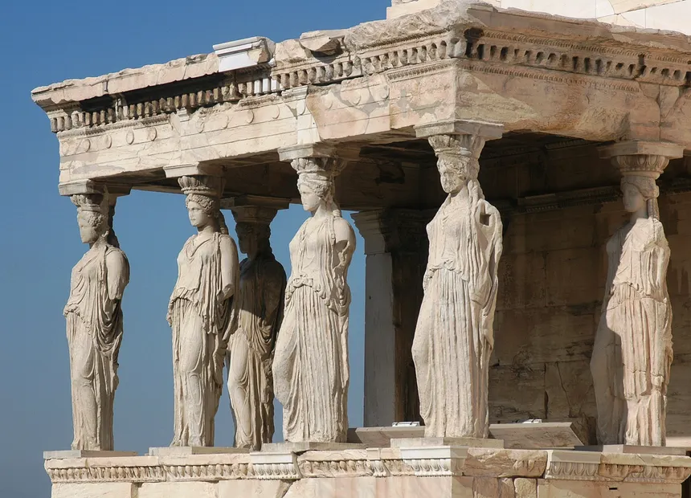
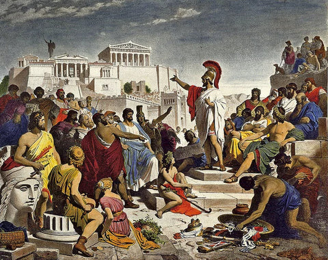

Historia
La historia de la antigua Grecia se divide en diversas etapas que marcaron su evolución política, cultural
y territorial:
Edad Oscura (siglos XI–IX a. C.)
Tras el colapso micénico, Grecia vivió un periodo de retroceso económico y cultural.
En este tiempo surgieron las primeras polis, como Atenas y Esparta, organizadas en tribus y clanes.
Periodo Arcaico (siglos VIII–VI a. C.)
Se consolidaron las ciudades-estado y comenzó la expansión comercial y colonial.
Los griegos adoptaron el alfabeto fenicio y desarrollaron instituciones políticas, pasando de monarquías a
aristocracias.
Siglo de Pericles y Liga de Delos (477–429 a. C.)
Atenas alcanzó su máximo esplendor político, artístico y filosófico bajo Pericles,
liderando la Liga de Delos y fortaleciendo la democracia.
Guerra del Peloponeso (431–404 a. C.)
El conflicto entre Atenas y Esparta devastó Grecia y marcó el fin de su periodo clásico.
Esparta triunfó, pero el país quedó debilitado.
Dominio Macedónico y Helenismo (siglo IV–I a. C.)
Filipo II unificó Grecia, y su hijo Alejandro Magno extendió su cultura hasta Asia.
Tras su muerte, el mundo helenístico mezcló elementos griegos y orientales antes de caer bajo dominio romano.
Grecia Romana y Bizantina
Grecia pasó a formar parte del Imperio Romano, manteniendo su influencia cultural.
Más tarde integró el Imperio Bizantino, conservando su lengua y tradiciones pese a las invasiones.
¿Por qué triunfó la época griega?
La civilización griega triunfó porque supo aprovechar su geografía y el mar Mediterráneo, lo que le permitió
desarrollarse en ciudades-estado independientes, con gran diversidad política y cultural, y a la vez convertirse
en una potencia comercial y marítima.
En este contexto, Grecia se transformó en un laboratorio político donde surgieron sistemas inéditos como la
democracia ateniense o la organización militar de Esparta.

Los griegos avanzaron notablemente en ciencia y técnica: en matemáticas, medicina, física y arquitectura, lo que
hizo que su civilización trascendiera en el tiempo.
Sus ejércitos, primero organizados en falanges hoplíticas y después unificados bajo Alejandro Magno, expandieron
el helenismo desde Grecia hasta Egipto, Persia y la India.
Todo esto se mantuvo cohesionado gracias a una religión y mitología compartidas, que ofrecían identidad común y
celebraciones panhelénicas como los Juegos Olímpicos.
¿Por qué desapareció la civilización griega?
La Grecia clásica desapareció por su falta de unidad política. Las polis, enfrentadas entre sí, se debilitaron con
la Guerra del Peloponeso, lo que trajo crisis económica, desigualdad social y pérdida de poder.
Ni la democracia ateniense ni el sistema espartano lograron sostenerse, y la división permitió que Macedonia, bajo
Filipo II y Alejandro Magno, dominara Grecia e integrara su cultura en un imperio mayor.
Tras la muerte de Alejandro, el mundo helenístico mantuvo la herencia griega, pero ya sin independencia, hasta que
Roma conquistó Grecia en el siglo II a. C., absorbiendo su cultura y borrando su autonomía política.
Cultura
La cultura de la civilización griega antigua fue una de las más ricas y trascendentes del mundo antiguo.
Se desarrolló en un entorno rodeado de montañas e islas, lo que favoreció el surgimiento de distintas
ciudades-estado independientes, pero con una identidad común basada en la lengua, la religión y las tradiciones.
Los griegos buscaban la armonía en todos los aspectos de la vida: en el arte, en el pensamiento, en la política y
en la relación con la naturaleza.

Arte
El arte griego fue una expresión de equilibrio y perfección.
En la arquitectura, los templos dedicados a los dioses —como el Partenón de Atenas— fueron construidos con
proporciones cuidadosamente calculadas para transmitir belleza y orden.
En la escultura, representaban el cuerpo humano con gran realismo y sentido estético, exaltando la fuerza, la
serenidad y la armonía.
El arte no era solo decoración, sino una forma de rendir homenaje a los dioses y de reflejar los ideales de la
sociedad.
Literatura
La literatura y el teatro también fueron pilares fundamentales de su cultura.
Los poemas épicos de Homero, La Ilíada y La Odisea, transmitían los valores de heroísmo, honor y destino.
Más tarde, el teatro se convirtió en una forma de reflexión social y moral.
Las tragedias de Sófocles o Eurípides trataban temas como la justicia, el amor, la culpa o el poder,
mientras que las comedias de Aristófanes mostraban con humor los defectos humanos y las tensiones de la vida
política.
Filosofía
En la filosofía, los griegos dieron un paso decisivo hacia la razón.
Dejar atrás las explicaciones míticas para buscar respuestas racionales fue una auténtica revolución del
pensamiento.
Sócrates, Platón y Aristóteles abrieron caminos que todavía influyen en la manera en que entendemos la verdad, la
ética y el conocimiento.
Para ellos, vivir bien significaba alcanzar el equilibrio, evitando los excesos y actuando conforme a la virtud.
Religión
La religión, aunque politeísta, estaba profundamente unida a la vida cotidiana.
Los griegos sentían que los dioses formaban parte del mundo natural: el mar, los bosques, los vientos y las
montañas eran sagrados.
Por eso, los rituales, las ofrendas y las fiestas religiosas eran también una forma de respeto hacia la
naturaleza.
Educación
La educación ocupaba un papel muy importante.
Los niños aprendían desde pequeños a leer, escribir, hacer deporte y razonar.
Los griegos creían que el cuerpo y la mente debían desarrollarse por igual.
En Atenas, especialmente, la formación de los jóvenes incluía música, literatura, filosofía y debate,
porque un ciudadano debía ser capaz de pensar por sí mismo y participar activamente en la vida pública.
En conjunto, la cultura griega fue una búsqueda constante de la belleza, la sabiduría y la armonía.
A través de sus obras, sus ideas y su manera de vivir, los griegos sentaron las bases de la civilización
occidental.
Su legado sigue vivo porque supieron comprender algo esencial: que el ser humano y su entorno deben convivir en
equilibrio,
y que la verdadera grandeza está en cultivar tanto la mente como el espíritu.